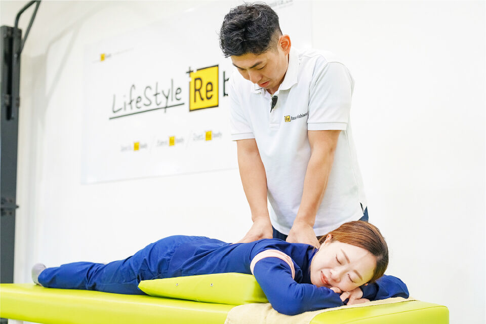
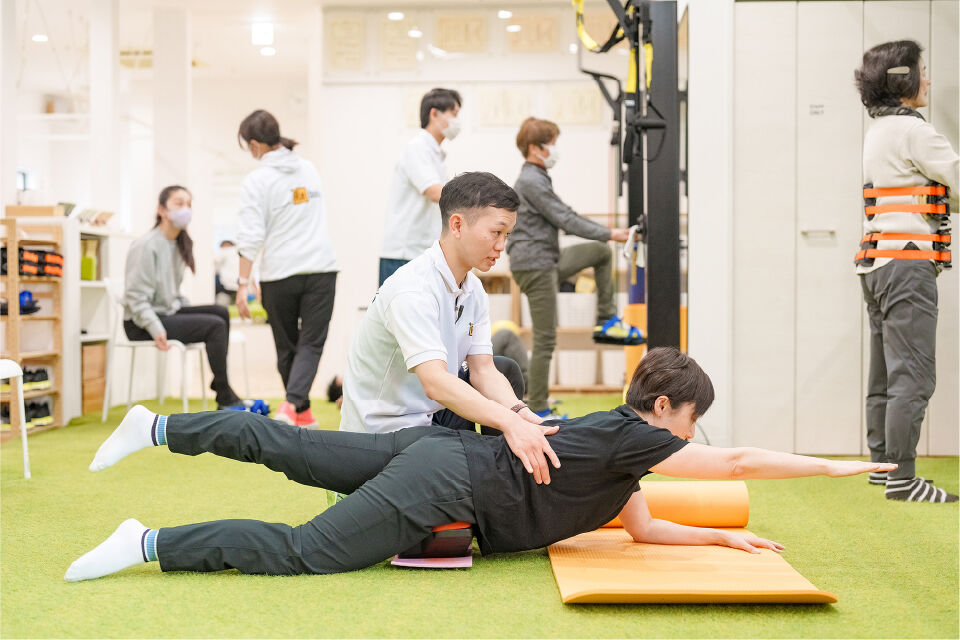
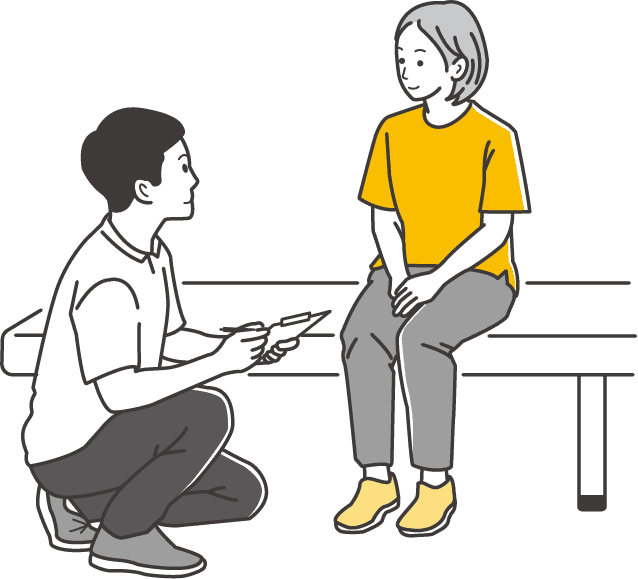
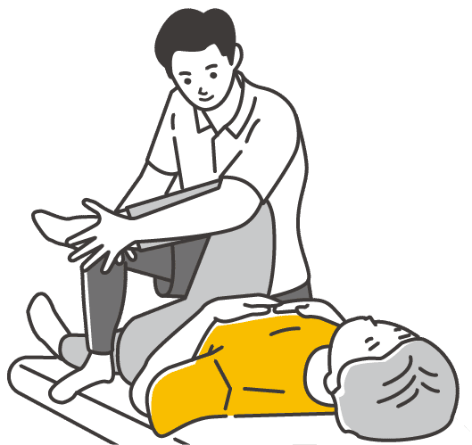
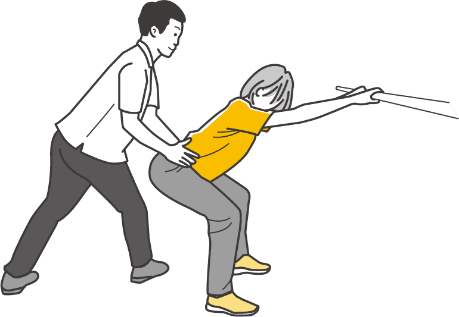
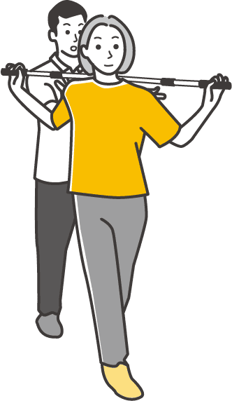
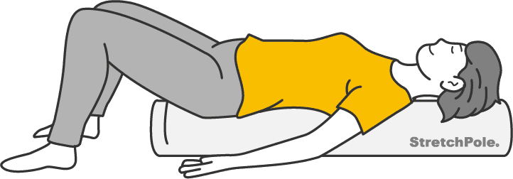
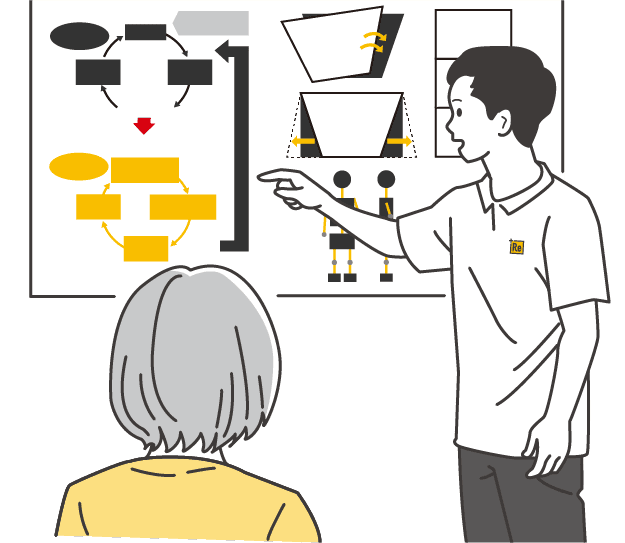
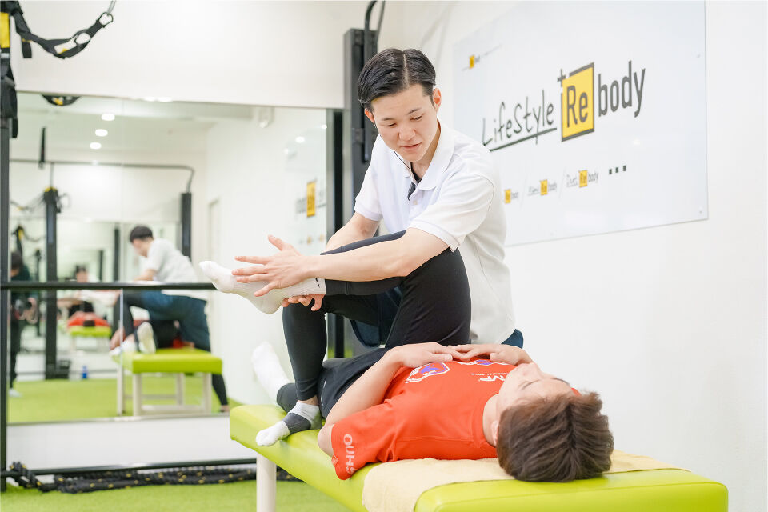
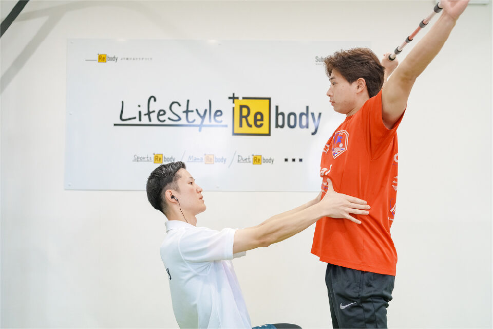

実際の流れ
岸和田の
HAREYAKA+Rebody整骨院での
施術の流れ
ー 初回から未来までの改善ロードマップ ー
岸和田の HAREYAKA+Rebody 整骨院の目的は、
「痛みが消えること」だけではありません。
本当に目指しているのは、“動けるカラダに戻ること”
そしてさらに、“自分のカラダを自分で整えられる状態”をつくることです。
そのためには、一時的な施術ではなく、改善の流れと積み重ねが大切になります。
ここでは、あなたがどの段階で何に取り組むのか。
初回から未来までの道筋をご紹介します。


ーまずは「今の状態」を
正しく知るー
最初に行うのは、あなたのカラダで何が起きているのかを正確に把握することです。

- 痛みや不調の場所
- 生活背景（仕事・スポーツ・育児）
- 過去のケガや既往歴
- 姿勢の崩れ
- 動きのクセ（許容範囲を超えている部分）
- 体幹が働きにくいポイント
- 負担が集中している部位
触診と動作評価を通じて、
「痛い場所＝原因ではない」という前提で、
本当の原因を見つけていきます。
最も重要なのは、
あなたの現在地を正しく知ることです。
ー間違った動きのクセの
“スタート位置”を整えるー
正しい動作は、正しい姿勢が整っていない限り再現できません。
岸和田の HAREYAKA+Rebody 整骨院ではまず、このスタート位置を整えます。

- 骨盤の前後バランス
- 背骨の反りや丸まり
- 肋骨の開き
- 頭の位置のズレ
- 足・肩・腕の軸の乱れ
これらを手技療法で整え、
正しく動ける土台をつくります。
これは、家でいう基礎工事。
基礎が歪んでいるままでは、どれだけ動いても元に戻ってしまうため、
最初に必ず行う工程です。
ーサボっていた体幹を
“自動で動く状態”へー
整えたカラダを、
安定して支えられる状態に再教育する段階です。
行うのは筋トレではなく、
体幹本来の働きを取り戻す再学習。

- 体幹深部筋群の運動
（腹横筋・多裂筋・横隔膜・骨盤底筋群・腸腰筋） - バランス反応（神経系の反射）
- 体幹が先に働き、手足が後に動く順序
- 支える筋肉と動かす筋肉の協調
- 重心・軸の再構築
多くの方がこの段階で、
「姿勢が楽」「痛みが減った」「動きやすい」
といった変化を感じ始めます。
ー生活・仕事・スポーツで
使える動きへー
整い、安定した体幹を実際の動きの中で使える状態へと再教育します。

- バランスよく立てる
- しゃがめる
- きれいに歩ける
- 力を抜ける
- カラダを柔らかく使える
ここでは赤ちゃんの発達のように
シンプルな動き→複雑な動きの順番で見直していきます。
「体幹→手足」「全身の連動」この正しい動作パターンを再獲得することで、
間違った動きのクセが改善され、“動けるカラダ”へと変わっていきます。
※STEP1〜3 は約 3 ヶ月・1〜18 回が目安
（症状や生活環境によって個人差があります）
ー自分のカラダを
自分で守れるようにー
ここからが、岸和田の HAREYAKA+Rebody 整骨院の最も大切なステップです。
せっかく整えても、日常生活で元のクセに戻ってしまえば意味がありません。
岸和田の HAREYAKA+Rebody 整骨院では、
あなたの症状、動きのクセ、目指す姿に合わせた個別セルフメニューを作成します。

- ストレッチポール ® を使ったリセット
- 呼吸の再教育
- 軸づくりの練習
- 1日5分の体幹ケア
- 姿勢を保つコツ
- 生活動作のポイント
これらを身につけることで、あなた自身が
「自分のカラダを自分で整えられる人」になります。
これは“卒業”ではなく、
健康自立への第一歩です。
ー痛みゼロは
ゴールではなくスタートー
カラダは習慣でつくられます。
だから岸和田の HAREYAKA+Rebody 整骨院では、
続けられる体幹ケアの習慣を一緒に設計していきます。

- 日々のセルフコンディショニング
- 月1〜2回のメンテナンス
- 季節や体調に合わせた調整
- スポーツ期や繁忙期のケア更新
- 体の変化に合わせた再チェック
※生活スタイルや目標に合わせて最適な通院ペースをご提案します。
+Rebodyの改善ロードマップ
ー痛みを再発しないカラダは
次の流れでつくられます。ー
- ①知る（評価）
- ②整える（手技療法）
- ③安定させる（運動療法）
- ④動く（動作の再教育）
- ⑤維持する（セルフコンディショニング）

